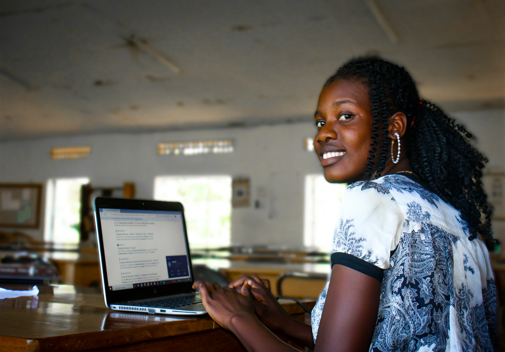

Donate a Device. Change a Future.
Transforming Unused Technology into Opportunities for Education, Innovation, and Inclusion
Technology has become one of the most powerful tools for education, communication, innovation, and economic empowerment. It enables teachers to deliver engaging lessons, students to access knowledge beyond the classroom, entrepreneurs to grow businesses, and communities to connect with new opportunities.
Yet, for many people across Nigeria, access to technology remains one of the greatest barriers to reaching their full potential. At the same time, thousands of laptops, tablets, and desktop computers sit unused in homes, offices, schools, and businesses, even though many remain suitable for educational use.
The Donate a Device – Change a Future Campaign bridges this gap by collecting, refurbishing, and redistributing digital devices to the people and communities who need them most. Every donated device becomes an opportunity to learn, innovate, and build a brighter future.


Why This Campaign Matters
Technology Should Create Opportunities, Not Barriers
We live in a digital world where education, employment, entrepreneurship, healthcare, and financial services increasingly depend on access to technology. Yet millions of people are still excluded because they simply do not have the digital tools they need to participate.
By redistributing donated devices, we help create pathways to education, innovation, employment, and lifelong learning while ensuring technology becomes a bridge to opportunity rather than a barrier.
Our Goal
Building a Community-Driven Digital Future
Our goal is to create a sustainable ecosystem where individuals, businesses, educational institutions, government agencies, and development partners work together to ensure functional digital devices reach the people who need them most.
Expand Access
Increase access to digital technology for underserved communities.
Promote Literacy
Support digital literacy and responsible technology use.
Reduce E-Waste
Extend the life of valuable technology through refurbishment.
Create Opportunities
Help learners, educators, and communities thrive in a digital world.
Our Objectives
What We Aim to Achieve
- Collect used, unused, and faulty digital devices.
- Professionally assess and refurbish donated equipment.
- Expand access to technology for underserved communities.
- Strengthen schools and community learning centres.
- Promote digital literacy and online safety.
- Reduce electronic waste through responsible reuse.
- Build partnerships that strengthen digital inclusion.
- Share transparent reports and campaign impact.